Step 1:
Write the formula for the drift current density.
…… (1)
Here,
The mobility of holes is 
The mobility of electrons is 
Charge of an electron is 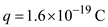
The electric field is 
Write the formula for Electric field,  applied across per unit length.
applied across per unit length.
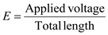
Substitute 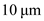 for  and 1 V for V to calculate the electric field.
and 1 V for V to calculate the electric field.
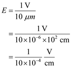
Step 2:
Consider the donor doped silicon bar. So it is a  type. Thus, the hole density is very less than electron concentration, that is 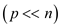. So neglect the term in the drift current density.
type. Thus, the hole density is very less than electron concentration, that is 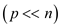. So neglect the term in the drift current density.
The free electron concentration is approximately equal to the donors doping concentration. The electron concentration is determined by the doping concentration. The electron concentration is not determined by the temperature. Therefore, for the n-doped silicon,

For the  type silicon, the donor doping concentration is, 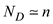
type silicon, the donor doping concentration is, 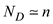
Write the modified formula for the drift current density.
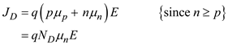
Step 3:
Substitute 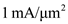 for , 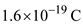 for  , 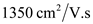 for
, 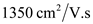 for  , and 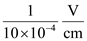 for 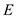 to calculate the required donor concentration.
, and 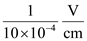 for 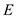 to calculate the required donor concentration.
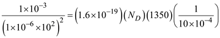
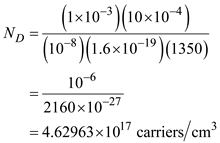
Therefore, the donor concentration needed to realize a current density of 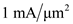 is
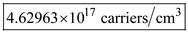.